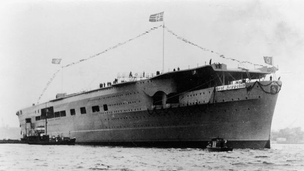

Portaviones Graf Zeppelin
El Graf Zeppelin fue un portaaviones (Flugzeugträger) de la Kriegsmarine, nombrado en honor del Graf (conde) Ferdinand von Zeppelin. Fue el único portaaviones alemán durante la Segunda Guerra Mundial. Su construcción fue ordenada el 16 de noviembre de 1935 y su quilla fue puesta el 28 de diciembre de 1936 en los astilleros Deutsche Werke de Kiel. Fue botado el 8 de diciembre de 1938, pero nunca fue completado ni puesto en servicio, y por supuesto nunca entró en combate. Al finalizar la Primera Guerra Mundial y tras la firma del Tratado de Versalles (1919), Alemania no disponía de medios para la construcción de portaaviones. Sin embargo, en 1933 Wilhelm Hacelar diseñó uno con dotaciones para 50 aviones ,28 bombarderos y 22 cazas. La falta de conocimientos en este terreno provocó que la construcción sufriera importantes retrasos. Por otra parte, la construcción masiva de submarinos fue otro de los factores que impidió la aceleración de este buque. Unos meses antes de que concluyese el conflicto, y sin que hubiera finalizado su construcción, el portaaviones fue hundido. La Unión Soviética lo llegó a reflotar, pero fue hundido de nuevo como barco objetivo. Mas información